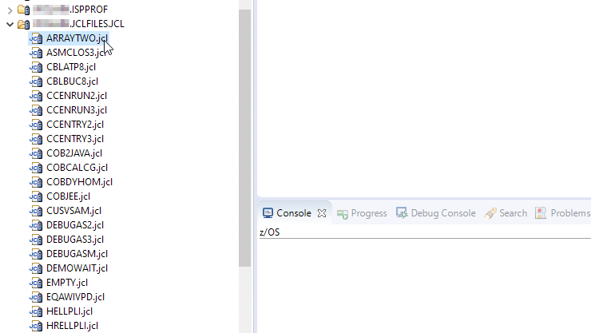

Launching Debug
From the Remote Systems view you can launch a debug session from any JCL, without having to instrument it for debug, by using the
Debug As>z/OS Batch application with existing JCL
context menu action.
